CrackMe_hard de jB - Solution par elooo

| Niveau | Outils | Auteur |
|---|---|---|
| Newbie avancé | Ollydbg 1.9d | elooo |
Familiarisation avec le crackme
La première chose que l'on remarque sur ce crackme c'est qu'il n'y a pas de bouton "OK" ou
"Tester", bref un bouton qui nous permettrait de vérifier que notre serial entré est correct.
Mais comment peut donc se faire la vérification ?
Le crackme récupère en fait chaque caractère au fur et à mesure qu'ils sont rentrés et les teste. C'est la seule hypothèse envisageable.

USER32.GetDlgItemTextA permet de faire ça aisément. Nous affichons donc les imports (ctrl+n) puis posons un bp sur toutes les références à cette fonction.
On fait F9 pour lancer le processus.
Evidemment ça breake illico. Pressez sur F9 jusqu'à ce que le crackme soit complètement lancé. Il faut savoir que dès que vous modifirez le champ "Mot de passe", ça breakera sous olly.
Placez-vous sur ce fameux champ avec la souris et effacez un point de "DUR, DUR..." par exemple.
Etude de la routine
Vous devriez breaker au même endroit que moi.
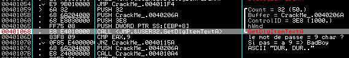
J'ai commencé à commenter la routine. Comme vous pouvez le voir, il y a un test sur la longueur du pass : si celle-ci n'est pas égale à 9, on jump vers badboy.
Donc 1ere chose : le pass doit faire 9 caractères !
Testons donc avec un fake serial de 9 lettres pour voir la suite :)
Désactivez vos précédents bp, pressez sur F9 pour bien relancer le crackme et rentrez par exemple ABCDEFGHI.
Posez votre bp juste où on s'était arrêté tout à l'heure (en 0040107B), puis de nouveau F9. Ca breake et on va tracer lentement tout en commentant :)
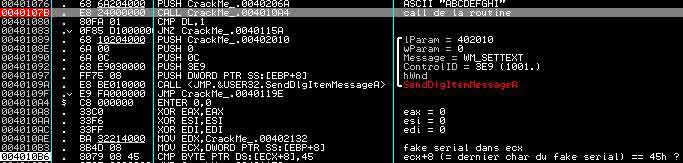
Un call nous emmène un peu plus loin dans la routine et on peut voir un test entre le dernier caractère de notre fake serial et 45h. La dernière lettre de ABCDEFGHI est un I, autrement dit 49h. Pour obtenir 45h, il faudrait que notre fake serial finisse par E.
D'où cette 2eme condition : le serial finit par un E !
On inverse en live le saut qui suit :
004010BA . /0F85 9A000000 JNZ CrackMe_.0040115A
Ce qui donne :
004010BA /0F84 9A000000 JE CrackMe_.0040115A
Et on continue :
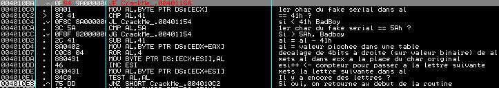
Le crackme va, comme je l'ai annoté ci-dessus passer chaque caractère de notre fake serial en revue, et tout d'abord vérifier qu'il correspond à une valeur hexadécimale comprise entre 41h et 5Ah, autrement dit que notre fake serial n'est constitué que de lettres comprises entre A et Z.
Donc 3eme condition : le serial est un mot écrit en majuscules !
Une fois cette vérification faite pour un caractère, il prend la position de ce caractère dans l'alphabet (soustrait 41h à la valeur hexa du caractère, ce qui équivaut à récupérer sa position dans l'alphabet en considérant qu'un A aura la position 0, un B la position 1, etc).
Cette position va permettre ensuite d'aller chercher une valeur dans une table prédéfinie, table qui a sa première valeur dans edx, sa deuxième en edx+1, etc.
Si on va voir dans le dump quelles sont les valeurs qui se trouvent à l'adresse mémoire pointée par edx, on tombe sur notre table de valeurs.
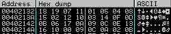
Pour plus de clarté, on pourrait faire un tableau de correspondances :
| Lettres | A | B | C | D | E | F | G | H | I | J | K | L | M | N | O | P | Q | R | S | T | U | V | W | X | Y | Z |
|---|---|---|---|---|---|---|---|---|---|---|---|---|---|---|---|---|---|---|---|---|---|---|---|---|---|---|
| Valeurs | 18 | 19 | 07 | 11 | 01 | 05 | 04 | 08 | 15 | 02 | 12 | 10 | 03 | 14 | 0F | 0D | 0B | 06 | 17 | 0A | 09 | 0C | 0E | 13 | 16 | 10 |
On transforme ensuite cette valeur en binaire, et on effectue un décalage de 4 bits à droite.
Exemple pour A :
A correspond à la valeur 18h dans la table (attention, toutes les valeurs dans la table sont des valeurs en hexadécimal !)
18h est égal en binaire à 11000 (je n'explique pas comment on convertit manuellement des valeurs hexa en binaire, pour ceux qui ne savent pas, la calculatrice win fait ça très bien :))
Mais attention encore une fois, la valeur binaire doit être donnée sur un format de demi-octets, autrement dit on doit avoir 4 chiffres, 8 chiffres, 12 chiffres, 16 chiffres, etc, mais pas 6. S'il manque des chiffres, on rajoute des 0 à gauche. 11000 sera donc notée finalement 00011000.
On prend les 4 derniers chiffres de la valeur binaire (00011000 et on les déplace à gauche (ce qui correspond à un décalage par la droite).
On a maintenant pour valeur binaire 10000001, ce qui équivaut à une valeur hexadécimale de 81h
Voilà donc à quoi correspond le ROL AL, 4.
Il va remplacer chaque valeur hexadécimale de notre fake serial par cette nouvelle valeur ainsi obtenue. On pourrait alors refaire un tableau de correspondances si l'on veut simplifier encore un peu les choses.
| Lettres | A | B | C | D | E | F | G | H | I | J | K | L | M | N | O | P | Q | R | S | T | U | V | W | X | Y | Z |
|---|---|---|---|---|---|---|---|---|---|---|---|---|---|---|---|---|---|---|---|---|---|---|---|---|---|---|
| Avant | 18 | 19 | 07 | 11 | 01 | 05 | 04 | 08 | 15 | 02 | 12 | 10 | 03 | 14 | 0F | 0D | 0B | 06 | 17 | 0A | 09 | 0C | 0E | 13 | 16 | 10 |
| Après | 81 | 91 | 70 | 11 | 10 | 50 | 40 | 80 | 51 | 20 | 21 | 01 | 30 | 41 | F0 | D0 | B0 | 60 | 71 | A0 | 90 | C0 | E0 | 31 | 61 | 01 |
A la place de notre fake serial d'origine est donc stockée une nouvelle série de valeurs (dans ecx). Le screenshot ci-dessous le confirme :
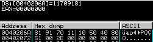
Continuons les commentaires de la routine.
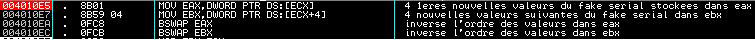
On met les 4 premières valeurs de ecx (ce qui correspond à nos 4 premières lettres après transformation) dans eax, les 4 suivantes dans ebx.
Et là j'en entends me dire "Et le dernier caractère alors ? Le serial doit faire 9 caractères non ?". C'est exact, mais un test à déjà été fait au préalable, souvenez-vous, il vérifiait si le dernier caractère était égal à un E, donc un nouveau test n'est pas indispensable.
Ensuite il inverse l'ordre des valeurs contenues dans eax et l'ordre de celles contenues dans ebx. Voilà ce que donne les registres avant et après :
Avant : 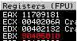 Après : 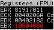
On a donc maintenant
eax = 81917011 et ebx = 10504080
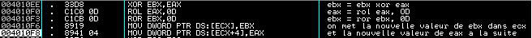
On xor ensuite ebx avec eax et on met cette valeur dans ebx. Faisons ça en manuel pour bien comprendre à quoi correspond un xor.
eax = 81917011 en hexadécimal = 10000001100100010111000000010001 en binaire.
ebx = 10504080 en hexadécimal = 10000010100000100000010000000 en binaire.
Le nombre de chiffres de ebx ne correspondant pas à un multiple de 4, on complète avec des 0.
Donc ebx = 00010000010100000100000010000000
Le xor correspond au OU EXCLUSIF, pour résoudre XOR EBX, EAX, il va donc falloir prendre chaque bit des valeurs binaires de ebx et de eax et se référer à la table de vérité ci-dessous.
| xor | 0 | 1 |
|---|---|---|
| 0 | 0 | 1 |
| 1 | 1 | 0 |
eax = 10000001100100010111000000010001
ebx = 00010000010100000100000010000000
xor = 10010001110000010011000010010001 = 91C13091 en hexadécimal
On met la valeur du xor dans ebx. On a donc maintenant :
eax = 81917011
ebx = 91C13091
On passe alors au rol eax, 0D.
On a vu au-dessus qu'un ror était un décalage à droite, eh bien un rol, c'est un décalage à gauche, ici de 13 bits (0Dh = 13) :)
On prend les 13 premiers bits de eax : 10000001100100010111000000010001
Et on les passe à droite : 00101110000000100011000000110010 = 2E023032h
On met la valeur du rol dans eax :
eax = 2E023032 et ebx = 91C13091
Ensuite le ror ebx, 0D. Même principe mais dans l'autre sens.
On prend les 13 derniers bits de ebx : 10010001110000010011000010010001
Et on les passe à gauche : 10000100100011001000111000001001 = 848C8E09h
On met la valeur du ror dans ebx :
eax = 2E023032 et ebx = 848C8E09
Et on stocke le tout dans ecx, ebx d'abord puis eax à la suite.
Vous noterez cependant que les valeurs ne sont pas stockées comme je les ai écrites ci-dessus, mais en ordre inverse : 848C8E09 est stocké en 098E8C84 et 2E023032 en 3230022E. C'est dû au format little endian d'Intel, il suffit juste de le savoir, et d'en tenir compte pour la suite :)
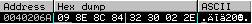
Bon c'est pas terminé donc on continue :
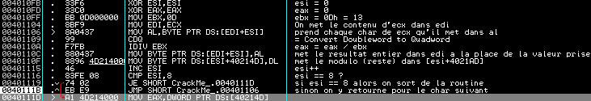
On initialise esi et eax à 0, et on met 13 (0Dh) dans ebx.
On met le contenu de ecx dans edi. Puis on prend chaque valeur hexa de edi (sera stockée dans al) que l'on va diviser par ebx.
cdq étend le contenu de eax à 64 bits et le résultat est renvoyé en edx:eax.
On récupère la valeur entière de la division que l'on met dans edi à la place de la valeur qu'on a prise précédemment et le reste de la division (modulo) sera mis dans un autre buffer (en esi+4021AD).
On incrémente esi (qui nous sert de compteur ici) et tant que esi est différent de 8 on repasse dans la routine pour s'occuper de la valeur suivante d'edi.
Comme précédemment on va faire le premier caractère manuellement pour voir ce que ça donne concrètement :
La première valeur prise est al = 09 (cf ci-dessus pour l'explication).
On étend le contenu de eax à 64 bits. Pour rappel, eax est la forme étendue (sur 32 bits) de ax (16 bits). ax est lui-même divisé en ah (partie haute de ax sur 8 bits) et al (partie basse de ax sur 8 bits). Ici on a donc eax = 00000009, ax = 0009 et al = 09.
Le fait d'utiliser cdq va nous permettre de récupérer le modulo (reste de la division) dans edx.
09 / 13 = 0 (valeur entière) + 9 (modulo) donc on devrait trouver eax = 00000000 et edx = 00000009
C'est effectivement le cas, mais edx ne nous intéresse pas, c'est surtout le modulo qui est intéressant, sans tous les 0 devant donc on stocke juste dl (= 09)dans esi+4021AD.
Voilà pour un caractère. Une fois les 8 caractères passés on trouve dans esi+4021AD :
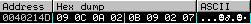
Et dans edi :
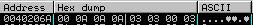
Et cette fois-ci on touche à la fin, la série de checksum :
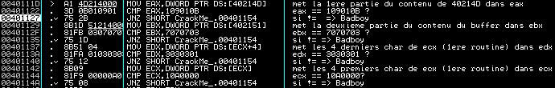
Le crackme compare eax à 0109010B, ebx à 07070703, edx à 03030301 et ecx à 010A0000.
Pour notre fake serial on obtient à terme :
eax = 020A0C09
ebx = 0702090B
edx = 03000303
ecx = 0A0A0A00
Bref, c'est pas gagné :p
Donc on récapitule :
- Le pass doit faire 9 caractères
- Le serial finit par un E
- Le serial est un mot écrit en majuscules
- eax = 0109010B
- ebx = 07070703
- edx = 03030301
- ecx = 010A0000
Résolution du crackme
Je vois 3 méthodes possibles de résolution de ce crackme : soit on code un programme qui ferait les calculs sur les 8 premiers caractères du serial pour que nos registres correspondent à ce qui est attendu, soit on modifie directement les registres dans ollydbg, soit on refait tous les calculs en sens inverse à la main :p
Modification dans les registres
edx = 03030301 et ecx = 010A0000 correspondent aux modulo de la division euclidienne par 0D et ebx = 07070703 et eax = 0109010B aux valeurs entières respectives. On peut donc remonter facilement.
0B + 00 * 0D = 0B
01 + 00 * 0D = 01
09 + 0A * 0D = 8B
01 + 01 * 0D = 0E
On a donc la valeur de ebx après le ror ebx, 0D.
ebx = 0E8B010B
03 + 01 * 0D = 10
07 + 03 * 0D = 2E
07 + 03 * 0D = 2E
07 + 03 * 0D = 2E
Et la valeur de eax après le rol eax, 0D.
eax = 2E2E2E10
On pause un bp sur le "xor ebx, eax", on patche le "rol eax, 0D" en "ror eax, 0D", on change la valeur de eax par 2E2E2E10 et on fait F7 deux fois. On regarde la nouvelle valeur de eax = 70817171, ce qui correspond à CASS (cf table de correspondance au-dessus).
On a alors les 4 premiers caractères du pass :)
Passons au "ror ebx, 0D".
Même méthode que pour eax, et on obtient ebx = 602161D1
Mais ebx est modifié par le "xor ebx, eax" également.
eax = 70817171 et ebx = 602161D1
70817171 ^ 602161D1 = 10A010A0, ce qui correspond à ETET
Voici donc les 4 caractères suivants du pass.
On se souvient que la 9eme lettre est un E, par conséquent on sait dire maintenant que le pass valide est "CASSETETE"
On vérifie :
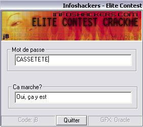
On a bien travaillé :) :)
Coding d'un prog qui ferait les calculs à notre place
Je vous mets ci-dessous le bout de code (en asm) que j'ai codé en me basant sur ce que j'ai expliqué plus haut afin que mon petit prog me fasse les calculs.
C'est pas aussi propre que le code de jB, c'est pas rigoureux, pas très joli (je fais avec mes connaissances actuelles :p) mais bon ça fonctionne :)
Autrement dit, je ne cherche pas à avoir des commentaires sur ma manière de coder, et surtout ne prenez pas exemple sur cette source pour apprendre l'asm :)
pushad
mov PART2, 109010Bh ; initialise avec les valeurs qu'on cherche
mov ebx, 7070703h ; initialise avec les valeurs qu'on cherche
mov eax, 3030301h ; initialise avec les valeurs qu'on cherche
mov PART1, 10A0000h ; initialise avec les valeurs qu'on cherche
xor esi, esi
xor edi, edi
modulo1: ; Multiplication par 0D avec prise en compte du modulo
xor edx, edx
mov dl, byte ptr [esi+PART1]
imul edx, 0Dh
add dl, byte ptr [esi+PART2]
mov byte ptr [STOCK+esi], dl
inc esi
cmp esi, 4 ; boucle 4 fois (pour 4 chars)
jz modulo2 ; puis va preparer les buffers avec les variables suivantes
jmp modulo1 ; sinon continue la routine
modulo2: ; Changement des variables pour l'autre partie du mot
test ebx ,ebx ; si ebx == 0, alors c'est qu'il y a eu 2 passages
; dans la routine modulo1
jz suite ; et donc qu'on peut continuer vers suite
mov dword ptr PART2, ebx
mov dword ptr PART1, eax
mov edi, dword ptr STOCK
mov dword ptr BUFFER, edi
xor ebx, ebx ; ebx ne sera initialise a 0 que si un passage dans la
; routine modulo1 a deja eu lieu
xor esi, esi
xor edi, edi
jmp modulo1 ; si ebx etait != de 0, on va jumper vers modulo1 pour
; s'occuper de l'autre partie du mot
suite: ; Traitement des rol 0D, ror 0D et xor
mov eax, dword ptr STOCK
mov ebx, dword ptr BUFFER
ror eax, 0Dh
rol ebx, 0Dh
xor ebx, eax
xor ecx, ecx
mov dword ptr STOCK, eax
mov dword ptr BUFFER, ebx
table1: ; Traitement du rol 4
mov dl, byte ptr [STOCK+ecx]
rol dl, 4
mov byte ptr [STOCK+ecx], dl
inc ecx
cmp ecx, 4 ; on boucle 4 fois pour faire 4 lettre
jz table2 ; puis on va vers table2 pour initialiser les
; valeurs suivantes
jmp table1 ; sinon on continue dans cette routine
table2: ; Stockage dans un autre buffer pour pouvoir traiter l'autre partie du mot
test ebx, ebx ; ebx == 0 seulement si les 2 series de 4 chars ont ete
jz precorrespondance ; traitees, et donc on ira vers precorrespondance
mov edi, dword ptr STOCK
mov esi, dword ptr BUFFER
mov dword ptr STOCK, esi
xor ecx, ecx
xor ebx, ebx
jmp table1
precorrespondance:
mov dword ptr BUFFER, edi ; on met les 4 1eres valeurs dans le buffer
correspondance: ; recupere la lettre parmi les valeurs qu'on a calculees
cmp ebx, 4 ; si on a passe 4 lettres on va tester si y'a eu un
jz testsortie ; ou deux passages
mov al, byte ptr [BUFFER+ebx]
xor ecx, ecx
recherche: ; recherche de la valeur correspondante dans notre tableau
cmp al, byte ptr [tableau2+ecx] ; cmp les valeurs a celles du tableau
jz ok ; si elle est trouvee, on va vers ok
inc ecx
jmp recherche ; sinon on boucle
ok: ; recupere la valeur correspondante
mov dl, byte ptr [tableau1+ecx]
mov byte ptr [BUFFER+ebx], dl
xor ecx, ecx
inc ebx
jmp correspondance ; puis on passe a la lettre suivante
testsortie: ; teste si toutes les lettres ont ete trouvees
test edi, edi ; si edi == 0, y'a eu deux passages dans la recherche
jz fin ; des lettres correspondantes donc on a finit
correspondance2: ; change les contenu des buffer pour traiter les 4 valeurs suivantes
xor ebx, ebx
xor ecx, ecx
mov esi, dword ptr BUFFER
mov edi, dword ptr STOCK
mov dword ptr BUFFER, edi
xor eax, eax
xor edi, edi ; edi ne sera initialise a 0 uniquement si y'a deja eu
; un passage dans la routine correspondance
jmp correspondance
fin: ; prepare pour l'affichage du mot de passe
mov dword ptr STOCK, esi
push BUFFER
push [BUFFER+1]
push [BUFFER+2]
push [BUFFER+3]
push STOCK
push [STOCK+1]
push [STOCK+2]
push [STOCK+3]
invoke wsprintf, offset SERIAL, offset FILTRE1
add esp, 20h
popad
Avec pour table déclarée dans mes .data :
FILTRE1 db "%c%c%c%c%c%c%c%cE",0
tableau1 db "A","B","C","D","E","F","G","H","I","J","K","L","M","N","O",
"P","Q","R","S","T","U","V","W","X","Y","Z",0
tableau2 db 26 dup (18h,19h,07h,11h,01h,05h,04h,08h,15h,02h,12h,10h,03h,
4h,0Fh,0Dh,0Bh,06h,17h,0Ah,09h,0Ch,0Eh,13h,16h,10h)
Vous remarquerez que le 9eme caractère imposé (le E) est présent dans le filtre d'affichage du pass
Et voilà ce que ça donne :
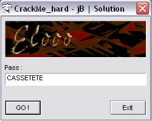
Vous trouverez mon petit prog ICI
Calculs à la main
Etant donné que j'ai déjà fait les calculs à la main lors de l'étude la routine, je ne vais pas les refaire ici. J'espère cependant que vous avez compris le principe.
Le mot de la fin
Je souhaite sincèrement avoir pu vous apprendre, ou au moins vous faire comprendre certaines choses. Je croise les doigts aussi pour ne pas avoir raconté trop de bêtises ;p.
Voilou... ce tutorial s'achève ici.